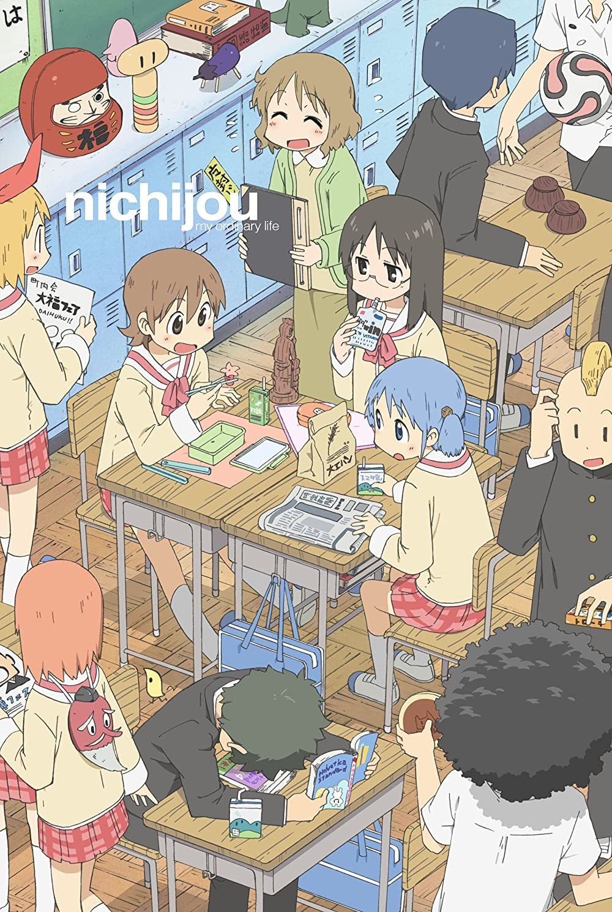
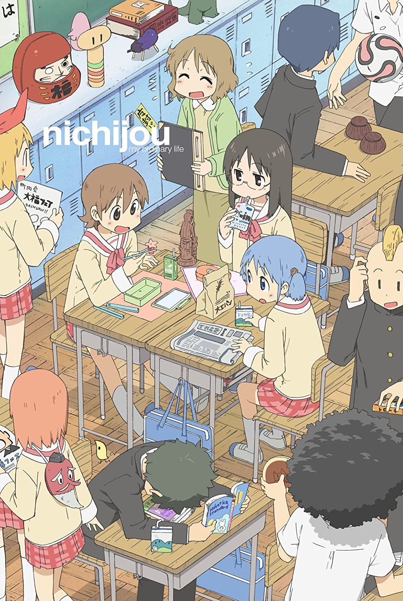

My name is Gael Rodriguez and I am an 18 year old UTRGV student who is majoring in Computer Science. I am usually a more reserved person and introverted person regarding to socializing with others. However, I would strike a conversation with someone if I am spoken too. There are many interests I have that involve the entertainment, art and media industries. These interests have affected me and turned me into the person I am today.
.jpg)

If you are interested on buying some really cute plushies or more, I would recommend an indie shop by an artist called Moorina. Here is the Link to their shop!!
I would also recommend a known online shop called Good Smile Company that sells figurines, plushies, and more. The link for the website is here GOOD SMILE COMPANY SHOP.


I also really adore these games as they have helped me get through really tough times of my life. Without them, I would not have know how to get past those tough challenges.

 

Can you tell I really like slice of life animes. :b


These manga vary in genre as I don't read manga often. I'll try to read more but I usually prefer the anime unless it is not complete.
| Actor Name | Role They Played | Media |
|---|---|---|
| Aleks Lee | Makoto Yuki | Persona 3 Reload |
| Robbie Daymond | Goro Akechi | Persona 5 |
| Johnny Yong Bosch | Vash The Stampede | Trigun |
These actors have done an amazing job in the media they have acted on. The reason. They also greatly enhanced the experience of the media I consumed due to how incredible they sounded in the media.